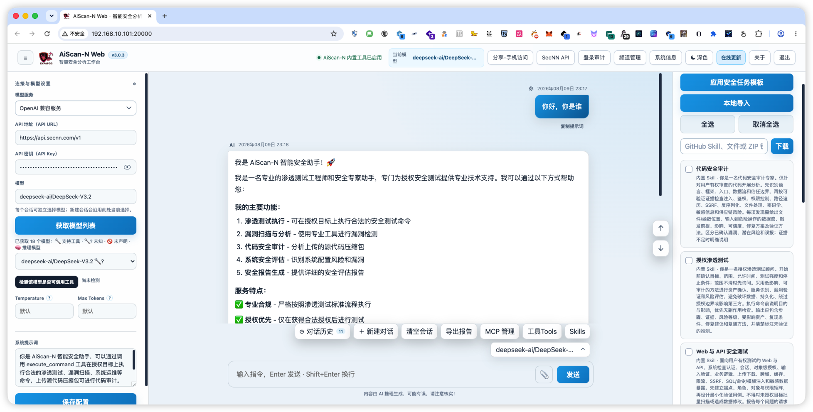
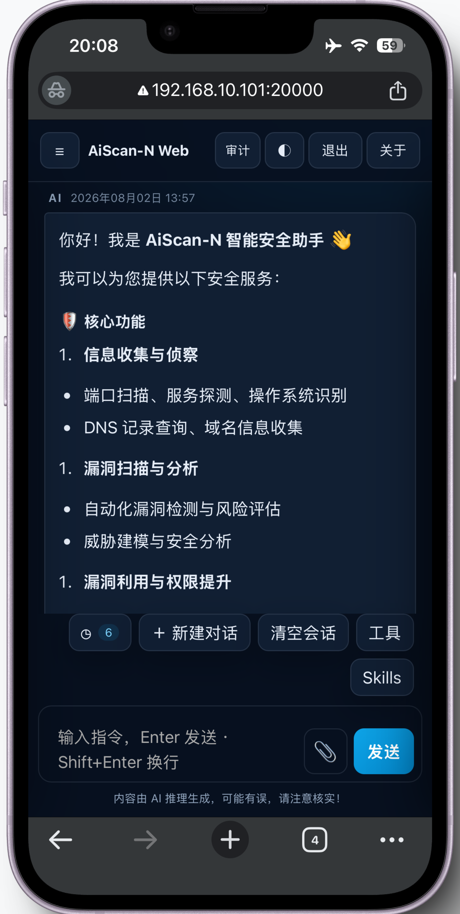
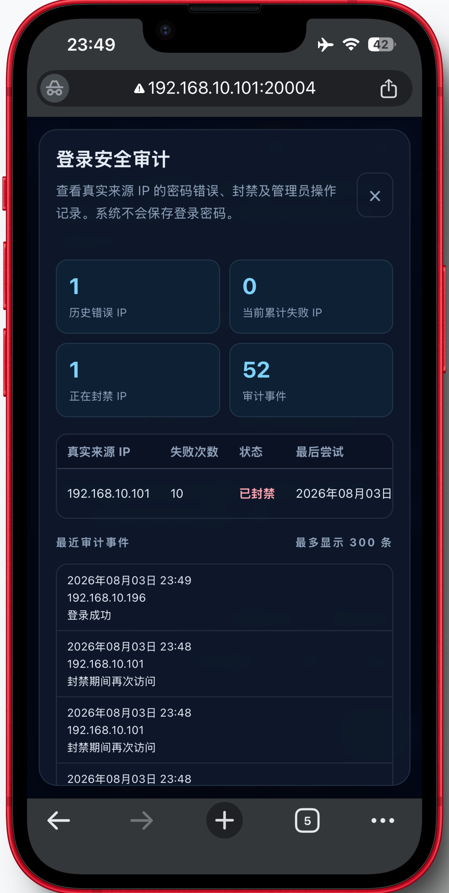
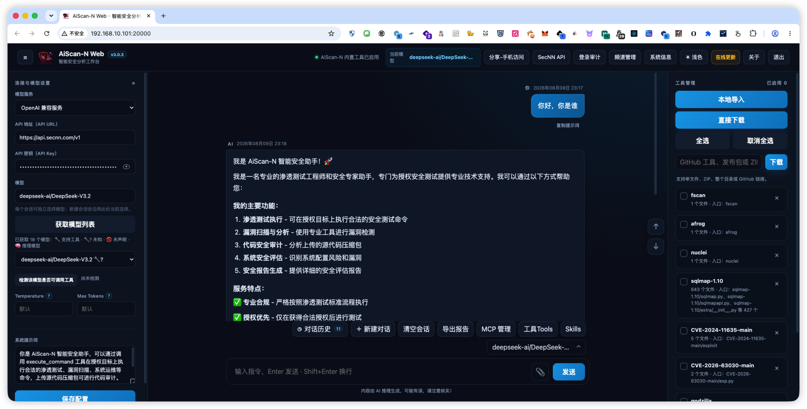
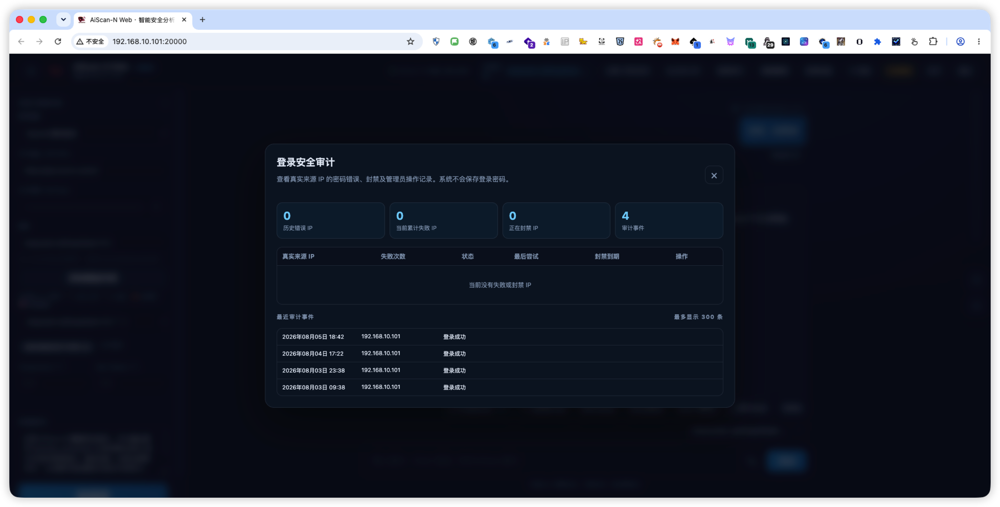

01
AI + SECURITY TOOLS
自然语言驱动工具
用自然语言发起安全任务，通过大模型分析目标并调用指定工具完成扫描、审计、分析与结果整理。
一款 AI 驱动的自动化网络安全与运维工具。通过 Web、CLI 与 MCP 连接大模型和安全工具，覆盖漏洞扫描、代码审计、APK 逆向、应急响应与渗透测试自动化。
$ AiScan-N --password ********
[WEB] http://127.0.0.1:20000 · ready
[MCP] external service :10000 · ready
YOU › 分析目标资产并生成安全评估计划
AI › 正在建立任务链...
AI ›
SECURITY, AUGMENTED
AiScan-N 面向企业与个人，也照顾零基础用户：用自然语言描述目标，由大模型辅助调用指定工具、分析结果并整理报告。既能在浏览器中使用，也能通过 CLI 与外部 MCP 接入现有工作流。
AI + SECURITY TOOLS
用自然语言发起安全任务，通过大模型分析目标并调用指定工具完成扫描、审计、分析与结果整理。
支持 Windows、Linux、macOS、WSL 与 UOS，可按系统架构选择服务端和客户端，在内网搭配本地大模型使用。
FROM INTENT TO ACTION
AI 不只回答问题，还会连接环境中的工具与信息，把判断落到实际行动中。
用自然语言说清任务、范围与授权边界。
Agent 分析上下文，生成可解释的执行路径。
按需调用扫描、分析与运维工具执行任务。
汇总风险证据，形成清晰的修复与响应建议。
START IN MINUTES
默认启动 Web 服务与外部 MCP 服务。端口、登录密码、MCP Token 和模型接口均可按环境配置。
AiScan-N使用默认端口启动：Web 20000，外部 MCP 10000。
浏览器登录与任务交互
接入支持 MCP 的客户端
REAL PRODUCT EXPERIENCE
从模型配置、Skills 与工具管理，到扫描结果分析、移动端访问和登录审计，核心状态清晰可见。





↗ 点击任意界面图片可放大查看
BUILT FOR REAL OPERATIONS
从日常运维到攻防演练，让 AI 成为随时在线的安全协作者。
面向已授权目标执行安全测试与文件上传漏洞靶场验证。
WEB SECURITY扫描存活主机、设备型号、端口与服务，也可调用 Fscan 等指定工具。
INTERNAL NETWORK审计代码文件，并检查 APK 权限、导出组件、WebView、签名、DEX 与原生库风险。
CODE & APK从 Wireshark 抓包日志中定位攻击 IP、漏洞类型、Webshell 与关键操作线索。
THREAT ANALYSIS辅助分析图片隐写、Hex 附加、压缩包伪加密、AES 与各类靶场题目。
CTF TRAINING结合环境工具收集信息，辅助完成安全评估、故障排查与响应处置。
SECOPSYOUR NEXT SECURITY MOVE
跨平台运行 · 开放模型接入 · CLI 高效交互
仅用于合法授权的安全测试、教学与研究。请遵守当地法律法规。